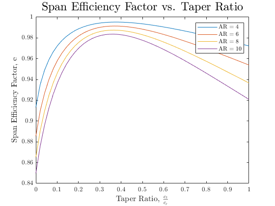

Contents
%%%%%%%%%%%%%%%%%%%%%%%%%%%%%%%%%%%%%%%%%%%%%%%%%%%%%%%%%%%%%%%%%%%%%%%%%%% % ASEN 3111 - CA4 % % Created By: Johnathan Tucker % % Collaborators: % % The purpose of the script is to act as a driver that will execute the % functions necesary to solve questions two and three of CA4. Note that the % solution to question 1 is the PLLT function itself % % Created Date: 4/7/2020 % % Change Log: % - 4/7/2020 Code the PLLT function % - 4/8/2020 Code up questions two and three %%%%%%%%%%%%%%%%%%%%%%%%%%%%%%%%%%%%%%%%%%%%%%%%%%%%%%%%%%%%%%%%%%%%%%%%%%%
Housekeeping
clc; clear all; close all; tic %Global formatting commands to imporve graphing looks: set(groot,'defaulttextinterpreter','latex'); set(groot,'defaultAxesTickLabelInterpreter','latex'); set(groot,'defaultLegendInterpreter','latex');
Question 1 Solution
Please see the attached PLLT equation
Question 2 Solution
Question_2();
For 1000 odd terms at sea level and a velocity of 150 mph: Lift = 103887.052554 [N] Induced Drag = 1918.144772 [N] The number of odd terms required for a 5% relative error in the lift and induced drag solutions is: 4 The number of odd terms required for a 5% relative error in the lift and induced drag solutions is: 7 The number of odd terms required for a 1% relative error in the lift solution is: 9 The number of odd terms required for a 1% relative error in the induced drag solution is: 16 The number of odd terms required for a 0.1% relative error in the lift solutions is: 27 The number of odd terms required for a 0.1% relative error in the induced drag solutions is: 48
Question 3 Solution
Question_3();
Functions Called
The following functions were built and called as a part of this assignment
function [e,c_L,c_Di] = PLLT(b,a0_t,a0_r,c_t,c_r,aero_t,aero_r,geo_t,geo_r,N) %PLLT Performs Prandtl lifting line theory calculations that take % advantage of the Fourier sine series to obtain circulation. This % ultimately leads to the calculation and output of span efficiency factor, % coefficient of lift, and coefficient of induced drag. % % Author: Johnathan Tucker % % Collaborators: N/A % Inputs: % b: Span [ft] % a0_t: cross-sectional lift slope at the wingtips [-] % a0_r: cross-sectional lift slope at the wing roots [-] % c_t: chord at the tips [ft] % c_r: chord at the wing root [ft] % aero_t: zero-lift angle of attack at tips [deg] % aero_r: zero-lift angle of attack at wing root [de] % geo_t: geometric angle of attack at tips [deg] % geo_r: geometric angle of attack at wing root [deg] % N: number of odd terms in series % % Outputs: % e: span efficiency factor [-] % c_L: coefficient of lift [-] % c_Di: coefficient of induced drag [-] % Last Revised: 3/26/2020 %%%%%%%%%%%%%%%%%%%%%%%%%%%%%%%%%%%%%%%%%%%%%%%%%%%%%%%%%%%%%%%%%%%%%%%%%%% %% Convert all variables to compatible units aero_t = aero_t*(pi/180); aero_r = aero_r*(pi/180); geo_t = geo_t*(pi/180); geo_r = geo_r*(pi/180); %% First create the theta vector i = 1:1:N; theta_vec = i.*(pi./(2*N)); %% Now create anonymous functions or vectors for wing properties % Wing Taper c = @(theta) c_r - (c_r - c_t).*cos(theta); % Variable cross-sectional lift slope a_0 = @(theta) a0_r - (a0_r - a0_t).*cos(theta); % Aerodynamic Twist alpha_lzero = aero_r - (aero_r - aero_t).*cos(theta_vec); % Geometric Twist alpha = geo_r - (geo_r - geo_t).*cos(theta_vec); %% Now Create the matrix to solve for the Fourier Coefficients % Preallocate to save time A = zeros(N,N); % Prior to this I'll create a vector that is N in length of odd values odds = 1:2:2*N; % First we need to iterate through every theta value for j = 1:N % Then we'll need to iterate through every coefficient multiplier % corresponding to this theta value for k = 1:N A(j,k) = (4*b*sin(odds(k)*theta_vec(j)))/... (a_0(theta_vec(j))*c(theta_vec(j))) + odds(k)*sin(odds(k)*... theta_vec(j))/sin(theta_vec(j)); end end %% With the A matrix we can now solve for the for the Fourier Coefficients % First get the "b" vector using the geometric and aerodynamic twist b_vec = alpha - alpha_lzero; coeffs = A\b_vec'; %% Now get the required outputs % Get the aspect ratio AR = (b^2)/((c_r + c_t)*(b/2)); % Get the c_L c_L = coeffs(1)*pi*AR; % Get the delta vector delta = odds(2:end).*(coeffs(2:end)'./coeffs(1)').^2; delta = sum(delta); % Use delta to solve for span efficiency e = 1/(1+delta); % Finally calculate c_Di c_Di = (c_L^2)/(pi*e*AR); end function [Cl, CP] = Vortex_Panel(x,y,V_inf,alpha,plotcp,increment) %Vortex_Panel Performs the calculations detailed in the Kuethe and Chow %document % % Author: Johnathan Tucker % % Collaborators: N/A % % Corrected using the reference solution posetd on canvas. % % This function takes in the x and y values from the NACA airfoil function, % the free stream velocity, the angle of attack, plotcp flag, and plot % increments. It outputs the coefficient of pressure, coefficient of lift, % and displays a plot of coefficient of pressure vs x/c % % Last Revised: 3/26/2020 %%%%%%%%%%%%%%%%%%%%%%%%%%%%%%%%%%%%%%%%%%%%%%%%%%%%%%%%%%%%%%%%%%%%%%%%%%% % Get the chord length for calculating Cl c = max(x) - min(x); % Begin the translation from 4tran to MATLAB % Create necessary variables M = length(x) - 1; MP1 = M + 1; alpha = alpha *(pi/180); for I = 1:M IP1 = I + 1; X(I) = 0.5*(x(I) + x(IP1)); Y(I) = 0.5*(y(I) + y(IP1)); S(I) = sqrt( (x(IP1) - x(I))^2 + (y(IP1) - y(I))^2 ); theta(I) = atan2( (y(IP1) - y(I)) , (x(IP1) - x(I))); sine(I) = sin(theta(I)); cosine(I) = cos(theta(I)); end RHS = sin(theta - alpha); for I = 1:M for J = 1:M if I == J CN1(I,J) = -1; CN2(I,J) = 1; CT1(I,J) = 0.5*pi; CT2(I,J) = 0.5*pi; else A = -(X(I) - x(J))*cosine(J) - (Y(I) - y(J))*sine(J); B = (X(I) - x(J))^2 + (Y(I) - y(J))^2; C = sin(theta(I) - theta(J)); D = cos(theta(I) - theta(J)); E = (X(I) - x(J))*sine(J) - (Y(I) - y(J))*cosine(J); F = log(1 + S(J)*(S(J) + 2.*A)/B); G = atan2(E*S(J), B + A*S(J)); P = (X(I) - x(J))*sin(theta(I) - 2.*theta(J)) +... (Y(I) - y(J))*cos(theta(I) - 2.*theta(J)); Q = (X(I) - x(J))*cos(theta(I) - 2.*theta(J)) -... (Y(I) - y(J))*sin(theta(I) - 2.*theta(J)); CN2(I,J) = D + .5*Q*F/S(J) - (A*C + D*E)*G/S(J); CN1(I,J) = .5*D*F + C*G - CN2(I,J); CT2(I,J) = C + .5*P*F/S(J) + (A*D - C*E)*G/S(J); CT1(I,J) = .5*C*F - D*G - CT2(I,J); end end end for I = 1:M AN(I,1) = CN1(I,1); AN(I,MP1) = CN2(I,M); AT(I,1) = CT1(I,1); AT(I,MP1) = CT2(I,M); for J = 2:M AN(I,J) = CN1(I,J) + CN2(I,J-1); AT(I,J) = CT1(I,J) + CT2(I,J-1); end end AN(MP1,1) = 1; AN(MP1,MP1) = 1; for J = 2:M AN(MP1,J) = 0; end RHS(MP1) = 0; % Solve the system of equations using A\b instead of Cramers GAMA = AN\RHS'; for I = 1:M V(I) = cos(theta(I) - alpha); for J = 1:MP1 V(I) = V(I) + AT(I,J)*GAMA(J); CP(I) = 1 - V(I)^2; end end % Change from gamma prime to gamma via Kuethe and Chow Gamma = 0; for i = 1:M Gamma = Gamma + 2*pi*0.5*(GAMA(i) + GAMA(i+1))*S(i); end % Solve for CL by calculating capital GAMMA inline using CA3 Notes formulas Cl = 2*Gamma; %% Create the pressure plot % This flag is if only one cp plot is wanted if plotcp == 1 figure cp_lower = CP(1:(length(x)+1)/2); cp_upper = CP((length(x)+1)/2:end); scatter(x((length(x)+1)/2:end-1)./c,cp_upper,'r') hold on scatter(x(1:(length(x)+1)/2)./c,cp_lower,'b') title('$Coefficeint\:of\:Pressure\:vs\:\\frac{x}{c}$','Interpreter','latex') xlabel('$x-distance\:[\% Chord]$','Interpreter','latex') ylabel('$Coefficient\:of\:Presure$','Interpreter','latex') legend('$Upper\:Surface$','$Lower\:Surface$','Interpreter','latex') % This flag is for the cp subplots required for question two elseif plotcp == 2 hold on subplot(2,2,increment) cp_lower = -CP(1:(length(x)+1)/2); cp_upper = -CP((length(x)+1)/2:end); scatter(x(1:(length(x)+1)/2)./c,cp_lower,'b') hold on scatter(x((length(x)+1)/2:end-1)./c,cp_upper,'r') title(strcat('CP vs $\frac{x}{c}$ with: $\alpha$ = ',num2str(alpha*180/pi),'$^\circ$'),'Interpreter','latex'); sgtitle('CP vs $\frac{x}{c}$ at Different $\alpha$ Values','Interpreter','latex'); xlabel('$\frac{x}{c}$','Interpreter','latex') ylabel('$-CP$','Interpreter','latex') legend('$Lower\:Surface$','$Upper\:Surface$','Interpreter','latex') end end function Question_2() %Question_2 Performs all calculations and outputs for question 2 in CA4 % % Author: Johnathan Tucker % % Collaborators: N/A % % This function has no inputs or direct outputs. However, it does display % the number of odd numbers required to achieve 5, 1, and 0.1 percent relative % error between an "exact" Lift and induced drag and the calculatedd Lift % and induced drag. % % Last Revised: 4/8/2020 %% Create constants b = 100; % [ft] c_r = 15; % [ft] c_t = 5; % [ft] geo_r = 5; % [deg] geo_t = 0; % [deg] V_inf = 150*5280/3600; % [ft/s] rho_SL = 0.0023769; % [slugs/ft^3] S = (c_r + c_t)*(b/2); % [ft^2] %% Get the root and tip aerodynamic twist % First get the x and y values for each airfoil [naca_0012_x,naca_0012_y] = NACA_Airfoil(0/100,0/10,12/100,1,150); [naca_2412_x,naca_2412_y] = NACA_Airfoil(2/100,4/10,12/100,1,150); % Then get the coefficient of lift for the airfoils for each angle of % attack aoa_vec = linspace(-5,10); for i = 1:length(aoa_vec) [Cl_0012(i),~] = Vortex_Panel(naca_0012_x,naca_0012_y,V_inf,aoa_vec(i),0,0); [Cl_2412(i),~] = Vortex_Panel(naca_2412_x,naca_2412_y,V_inf,aoa_vec(i),0,0); end % Now get aero_r and a0_r fit_2412 = polyfit(aoa_vec, Cl_2412,1); aero_r = fit_2412(2)/fit_2412(1); a0_r = fit_2412(1)*180/pi; % Now get aero_r and a0_r fit_0012 = polyfit(aoa_vec, Cl_0012,1); aero_t = -fit_0012(2)/fit_0012(1); a0_t = fit_0012(1)*180/pi; %% Begin error calculations % Now get an "exact" Lift and induced drag using a high number of panels N = 1000; [~,exact_cl,exact_cdi] = PLLT(b,a0_t,a0_r,c_t,c_r,aero_t,aero_r,geo_t,geo_r,N); exact_L = 0.5*rho_SL*(V_inf^2)*S*exact_cl; exact_Di = 0.5*rho_SL*(V_inf^2)*S*exact_cdi; exact_L_SI = 0.5*rho_SL*(V_inf^2)*S*exact_cl*4.44822; exact_Di_SI = 0.5*rho_SL*(V_inf^2)*S*exact_cdi*4.44822; % Print out the calculated lift and drag in Newtons fprintf("For 1000 odd terms at sea level and a velocity of 150 mph:\n"); fprintf("Lift = %f [N]\n",exact_L_SI) fprintf("Induced Drag = %f [N]\n\n",exact_Di_SI) % Using the exact values calculate the number of panels it takes to achieve % 5, 1, and 0.1 percent relative error N = 1; error_L = 100; error_Di = 100; % Create a loop to get the 0.1 percent error while true [~,cl,cdi] = PLLT(b,a0_t,a0_r,c_t,c_r,aero_t,aero_r,geo_t,geo_r,N); L = 0.5*rho_SL*(V_inf^2)*S*cl; Di = 0.5*rho_SL*(V_inf^2)*S*cdi; error_L(N) = (abs(L - exact_L)/exact_L) * 100; error_Di(N) = (abs(Di - exact_Di)/exact_Di) * 100; if error_L(N) <=0.1 && error_Di(N) <= 0.1 break end N = N + 1; end % Now find the number of panels where the error is first below 5 percent % for both Lift and Drag num_five_perc_L = find(lt(error_L,5),1,'first'); num_five_perc_Di = find(lt(error_Di,5),1,'first'); % Print the number of panels need for five percent error fprintf("The number of odd terms required for a 5%% relative error in \nthe lift and induced drag solutions is: %d\n",num_five_perc_L); fprintf("The number of odd terms required for a 5%% relative error in \nthe lift and induced drag solutions is: %d\n\n",num_five_perc_Di); % Now find the number of panels where the error is first below 1 percent % for both Lift and Drag num_one_perc_L = find(lt(error_L,1),1,'first'); num_one_perc_Di = find(lt(error_Di,1),1,'first'); % Print the number of panels need for five percent error fprintf("The number of odd terms required for a 1%% relative error in \nthe lift solution is: %d\n",num_one_perc_L); fprintf("The number of odd terms required for a 1%% relative error in \nthe induced drag solution is: %d\n\n",num_one_perc_Di); % Finally display the number of panels needed to achieve a relative error % less than 0.1 percent in both lift and drag num_point_1_perc_L = find(lt(error_L,.1),1,'first'); fprintf("The number of odd terms required for a 0.1%% relative error in \nthe lift solutions is: %d\n",num_point_1_perc_L); fprintf("The number of odd terms required for a 0.1%% relative error in \nthe induced drag solutions is: %d\n\n",N); end function Question_3() %Question_3 Performs all calculations and outputs for question 3 in CA4 % % Author: Johnathan Tucker % % Collaborators: N/A % % This function has no inputs or direct outputs. However, it does create a % plot of span efficiency factor versus taper ratio for different aspect % ratios. % % Last Revised: 4/8/2020 %% First Create any necessary % Use some odd term number greater than 20 N = 50; % Create a vector of taper ratios taper_ratio_vec = linspace(0,1,N); % Using thin airfoil theory with non varying lift slope a0_r = 2*pi; % [rad] a0_t = 2*pi; % [rad] % Use a constant geometric aoa geo_r = 5; % [deg] geo_t = 5; % [deg] % Vector of Aspect Ratios AR_vec = [4,6,8,10]; % Assume a zero lift aoa of 0 deg aero_r = 0; % [deg] aero_t = 0; % [deg] % The span should be constant reuse the span from Q2 b = 100; % [ft] %% Solve for the c_t and c_r values at the constant span for each AR % First iterate through each aspect ratio for i = 1:length(AR_vec) % Solve for the c_r values c_r(i,:) = (2*b)./(AR_vec(i).*(1+taper_ratio_vec)'); end % Solve for the c_t values c_t = c_r.*taper_ratio_vec; %% Solve for the span efficiency factor values % Iterate through each aspect ratio value for i = 1:length(AR_vec) % Iterate through the taper ratio vector for j = 1:length(taper_ratio_vec) % Calculate the span efficiency factor [e,~,~] = PLLT(b,a0_t,a0_r,c_t(i,j),c_r(i,j),aero_t,aero_r,geo_t,geo_r,N); e_vec(i,j) = e; end end %% Plot the results figure plot(taper_ratio_vec,e_vec(1,:)) hold on plot(taper_ratio_vec,e_vec(2,:)) hold on plot(taper_ratio_vec,e_vec(3,:)) hold on plot(taper_ratio_vec,e_vec(4,:)) title("Span Efficiency Factor vs. Taper Ratio",'FontSize',18) xlabel("Taper Ratio, $\frac{c_t}{c_r}$",'FontSize',12) ylabel("Span Efficiency Factor, e",'FontSize',12) legend("AR = 4", "AR = 6", "AR = 8", "AR = 10") function [x,y] = NACA_Airfoil(m,p,t,c,N) %NACA_Airfoil Performs the calculations necessary to get the x and y %vectors that describe the specified NACA airfoil % % Author: Johnathan Tucker % % Collaborators: N/A % This function takes in the max chord value "m", the location of max chord % "p", the thickness "t", the chord length "c", and the number of panels to % use "N". This function outputs the x and y vectors that describe the % specified NACA airfoil. % % Last Revised: 3/26/2020 %%%%%%%%%%%%%%%%%%%%%%%%%%%%%%%%%%%%%%%%%%%%%%%%%%%%%%%%%%%%%%%%%%%%%%%%%%% % Create vector for percentage of chord length x = linspace(0,c,N/2); % Create a vector of half thicknesses y_t = (t/0.2)*c*(0.2969.*sqrt(x./c) - 0.1260.*(x./c) - 0.3516.*(x./c).^2 +... 0.2843.*(x./c).^3 - 0.1036.*(x./c).^4); % I need to find the index of x that is closest to the p*c value [~,index] = min(abs(x-p*c)); % Now loop through the x values using a conditional statement that % replicates the peicewise function for i = 1:length(x) if i <= index y_c(i) = m.*(x(i)./p^2).*(2*p - x(i)./c); else y_c(i) = m.*((c-x(i))./(1-p)^2).*(1 + x(i)./c - 2*p); end end %Adding a check for NaN values y_c(isnan(y_c)) = 0; % Create zeta to solve for the upper and lower x/y values zeta = atan2(diff(y_c),diff(x)); zeta = [zeta,0]; % Solve for x_u and x_l x_u = x - y_t.*sin(zeta); x_l = x + y_t.*sin(zeta); % Solve for y_u and y_l y_u = y_c + y_t.*cos(zeta); y_l = y_c - y_t.*cos(zeta); % Combine upper and lower vectors to get final x and y x = [flip(x_u),x_l(2:end)]; y = -[flip(y_u),y_l(2:end)]; end
toc
Elapsed time is 6.291406 seconds.